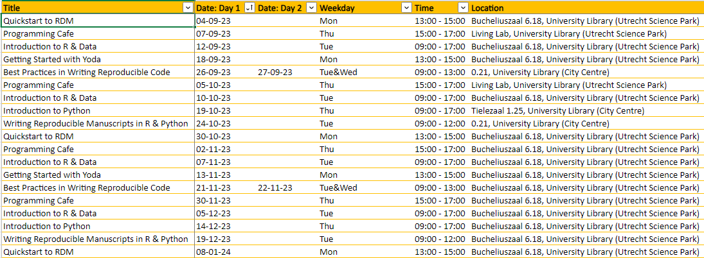
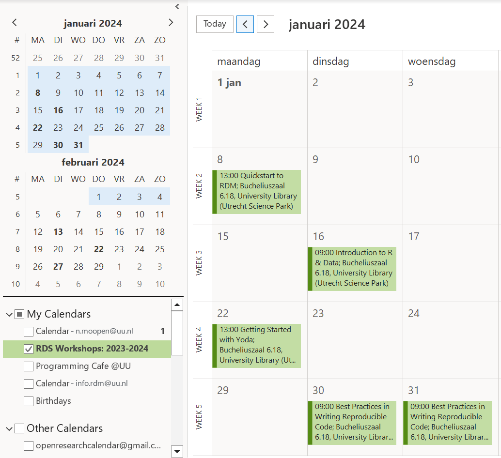
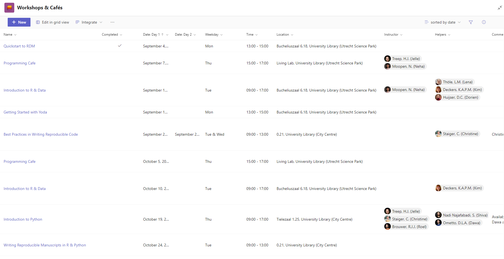
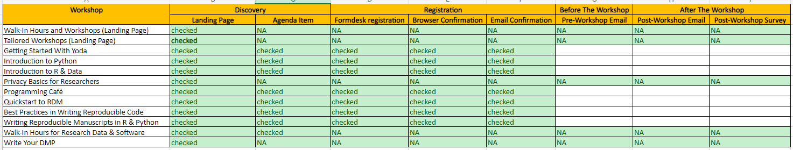

Before
This section provides an overview of what needs to occur while planning workshops for the upcoming academic year.
Jaarplanning
Before commencing the with the jaarplanning, the department should decide on which workshops will be offered (or not) and who will be involved in the workshop as leads and instructors/helpers.
Workshop Agenda
By the end of May, we should have the jaarplanning for the next academic year ready.
When doing this jaarplanning, we should take the following into account:
- the frequency of the workshop,
- the preferred days for the workshop,
- the number of participants for the workshop,
Moreover, the workshops should be spaced out well, so we don’t have weeks that are too busy or vice versa.
Here is an example of the workshop agenda for 2023-2024: RDM Support -> General -> Training & Workshops -> Workshop Communication Materials -> workshops-planning-2023-2024.xlsx

Room Booking
We need to book locations for all the workshops in advance. This can be done via the the booking system or by contacting colleagues in Publieksdiensten (probably not called the same now after the reorganization).
Outlook Calendar
When the jaarplanning is done, put it in an Outlook calendar that can be shared with everyone.

You can use the Excel sheet from the jaarplanning to create calendar items in bulk. Here are two links for reference:
https://www.techrepublic.com/article/how-to-import-excel-records-into-an-outlook-calendar/
https://www.auditexcel.co.za/blog/import-excel-appointments-into-outlook-calendar/
After that, you can choose to either share or publish your Outlook calendar:
- https://support.microsoft.com/en-us/office/share-your-calendar-in-outlook-com-0fc1cb48-569d-4d1e-ac20-5a9b3f5e6ff2
Sign Up Sheet
Also make a page where people can sign up or simply report who will be going.
May be redundant with the pool of instructors and helpers but might still help maintain overview. Maybe sign up for the whole academic year / commit to one workshop and then figure it out within your team. To be discussed.
Here is a link to the sign-up sheet for 2023-2024: RDM Support -> Team Code and Software -> Workshops & Cafes (tab)
The Excel sheet can also be used as a basis for creating this sign-up sheet tab, you don’t have to create entries separately.

Website
The following folder contains (per workshop) all the texts for landing pages, agenda items, Formdesk forms and confirmations, pre- and post-workshop emails: RDM Support -> General -> Training & Workshops -> Workshop Communication Materials
There is also an Excel sheet to track the review and update of materials:

Landing Page
Review the landing page text for all workshops. Lilli makes template and the workshop leads do the reviewing (primarily of workshop description/content, the more admin stuff will be generic).
Example of landing page for Introduction to R & Data: https://www.uu.nl/en/research/research-data-management/training-workshops/introduction-to-r-data
The landing page is a generic description of the workshop and includes an overview of all workshop dates with link to the specific agenda item.
- prerequisties
- what you can expect (or not)
- UU and UU-affiliated only
- costs
- deregistration and no-show/dropout policy
Note that a Dutch translation will be needed as well.
Agenda Items
The agenda item is specific to a workshop date/occurence and includes the link to the registration form.
Example of agenda item for Introduction to R & Data: https://www.uu.nl/en/events/introduction-to-r-data-may-2024
Note that a Dutch translation will be needed as well.
Formdesk
How to handle waitlists? Maximum number of participants? Maximum number of waitlisted participants?
Formdesk Form
The Formdesk registration form is largely the same for all workshops. There are generic questions related to registration, but a couple of specific questions per workshop.
Make sure that the werkstudenten ensure only UU and UU-affiliated addresses are accepted for registration! Provide a list of these addresses (UMCU, PMC, etc.)
Here is a link to the default questions for Formdesk at the moment: RDM Support -> General -> Training & Workshops -> Workshop Communication Materials -> _formdesk -> default-questions-formdesk-registration.docx
Browser Confirmation
This refers to the text that appears in your browser when the registration is confirmed. It points to info.rdm@uu.nl as contact point in case a confirmation email is not received.
Confirmation Email
This refers to the email that participants receive when their registration is confirmed. It points to info.rdm@uu.nl as contact point and includes a personalized link for deregistration.
We might want to consider putting the pre-workshop email in the Formdesk confirmation email already?
Werkstudenten
Once all the documents have been reviewed and/or updated, have the Communicatie werkstudenten put everything online. They can be contacted at: werkstudentCC@uu.nl
It can take them up to a month to process everything for a whole academic year. We naturally want to prioritize the workshops from September-December, so people can already start signing up for that.
Some things they should do: number of participants, UU & UU-affiliated addresses, specify the owners and co-owners for the form, notification if it’s registration less than 7 days.
It would be helpful to give them a briefing of instructions like in this document: RDM Support -> General -> Training & Workshops -> Workshop Communication Materials -> briefing-work-students.docx
New
- We need a TIMELINE for the jaarplanning and coordination – when do we wanna schedule big group meetings, review moments, determine leads 🎉
- Create a TASK BOARD for workshops if we think it’s useful.
- List the workshops + e-learnings we want do/maintain next academic year. Determine what to do with stuff that might be phased out (if at all). You might archive it for example.
- Determine the leads of these workshops, as well as a pool of instructors and helpers per workshop. Clarify and agree on what these roles mean and involve (and not).